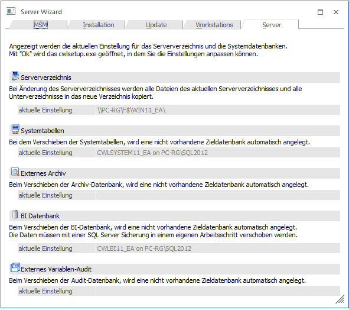

Im Menüpunkt…
1 MSM
1 Server Wizard
… kann die Installation von einem Server auf einen anderen Server transferiert werden
Grundsätzlich besteht ein WinLine Server aus zwei Teilen - aus den Programmdateien und aus den Systemtabellen. Die Programmdateien sind auf einem freigegebenen Verzeichnis des WinLine Servers abgelegt. Die Systemtabellen liegen auf einem SQL-Server / Express Edition. Beide Bereiche (die sich nicht unbedingt auf dem gleichen Rechner befinden müssen) können über den Server Wizard auf einen anderen Server verschoben werden. . Ab der Version 11.0 wird dies in dem cwlsetup.exe vorgenommen. Über das Bestätigen des OK Buttons wird das cwlsetup.exe automatisch gestartet und man gelangt automatisch in die Servermigartion von wo aus das Sereverzeichnis verschoben werden kann und / oder die Systemdatentabellen bzw. Datenbanken verschoben werden können.
